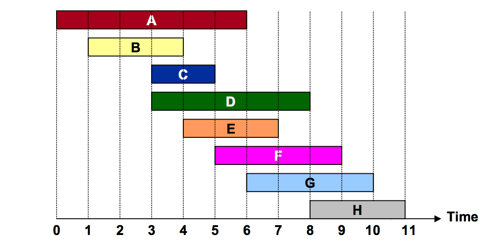

Greedy algorithms
Activity selection problem

Activities with start and finish times. Source: zrzahid.com
Optimal substructure
Suppose the optimal solution includes activity A. Then there are two subproblems: one for the period before activity A starts, and one for the period after A ends. The optimal solution will include optimal solutions to those two subproblems, so this problem exhibits optimal substructure.
We can use dynamic programming, but it is not necessary, because we can build an optimal solution one activity at a time by making greedy choices, without first solving the subproblems.
A greedy algorithm always makes the choice that looks best at the moment (the locally optimal choice). Greedy algorithms are efficient, but they are not always correct.
What's the greedy choice for activity selection?
One way to be greedy is to choose the activity with the earliest finish time, which leaves as much time as possible after the activity finishes. This gives us the optimal solution {B, E, H} in the image above.
Proof of optimality
Suppose our greedy choice, A, is not optimal, and the first activity in the optimal solution is B. A does not finish later than B, so A does not conflict with any activities in the optimal solution other than B, so we can simply replace B with A to get another optimal solution.
Another greedy approach is to always pick the shortest activity, but this approach is not correct. This gives us the unoptimal solution {C, H} in the image above.